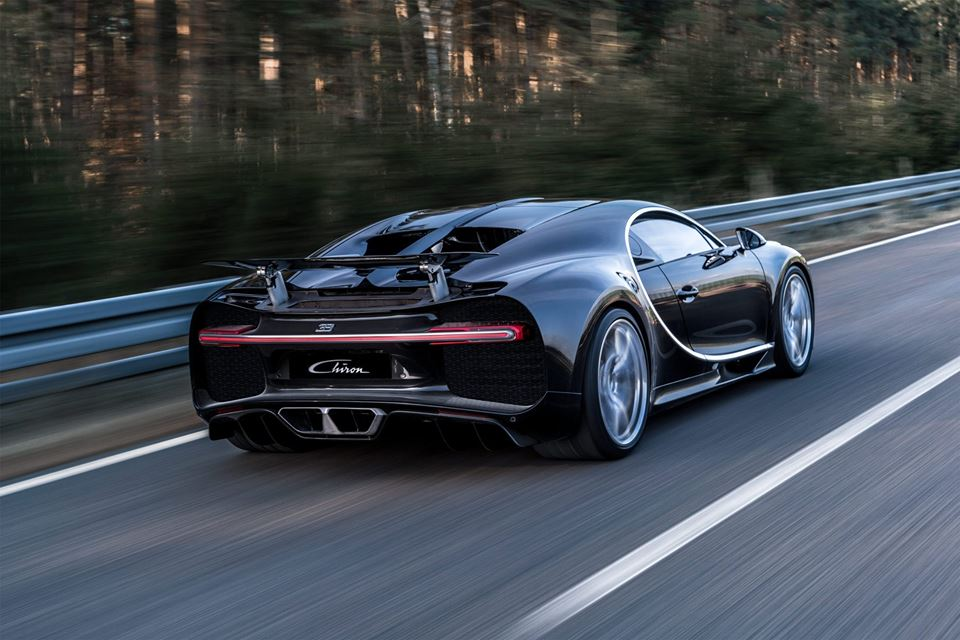

Mücevher ve mobilya tasarımcısı bir anne babanın oğlu olan Bugatti’nin kardeşi de heykel traştır. Ayrıca akrabalarının da diğer sanat dallarıyla yakınlığı göz önünde bulundurulduğunda otomobil tasarımında ortaya koyduğu sanatkarlığın şaşırtıcı derecede şık ve güzel olması bir tesadüf değil. Ettore Bugatti çizmeli yarım adanın Milano şehrinde doğmuştu. Bugatti belirli bir yaşa kadar eğitimini tamamladıktan sonra 1898 yılında otomotiv sektöründe çalışmaya başladı ve 1909 yıllarına kadar otomotiv sektörü üreticilerinde çalışmalarına devam etti.Bu çalışma yıllarında edindiği teknik deneyimle sanatsal kişiliğini bir araya getirmeyi hedefledi ve bunu başardı.
Bugatti’nin adını taşıyan şirket ise 1909 yılında kurulmuştu. Neredeyse tüm araba markalarının etkilendiği İkinci dünya savaşının başlamasıyla Bugatti markasında da maddi sorunlar ivme kazanmıştır. Bugatti’nin oğlu Jean Bugatti’nin fabrika yakınında ki bir pistte yeni yarış arabası modelinde deneme sürüşü yaptığı sırada ölmesinden sonra ise şirket tarihinde bir şanssızlık başlamıştır.
İkinci dünya savaşının başlamasıyla bu şanssızlık üksek değerlere ulaşmış, fabrikanın hasar görmesi bir yana dursun, Bugatti mülkiyet hakkını dahi kaybetmiştir. Bu dönem içerisinde uçak parçası üreten fabrikası da satılmıştır.
Yalnız üzerinde durulması gereken bir nokta ise savaş başlangıcına kadar Bugatti’nin dünyanın en prestijli ve en hızlı arabalarını üretmiş olmasıdır. Fransa’nın popüler Monaco Grand Prix yarışmalarının ilk müsabakasında aldığı birinciliğe ilaveten akabinde bu başarıların devamı gelmeye devam etmiştir.Fabrikanın kapanışının ardından ise Bugatti seri üretim araç fabrikası kurmayı planlamış fakat 1947 yılında, sanatkar ve teknolojik beyin vefat etmiştir. 21 Ağustos 1947!
Peki sonrası….
1950’li yılların ortasında Bugatti markası, Bugatti Ettore’nin Roland Bugatti isimli ikinci oğlu tarafından tekrar hayata geçirilmeye çalışılmıştır. Alfa Romeo, Ferrari ve Maserati arabalarının tasarımında imzaları olan ünlü tasarımcı Gioacchino ile bir araya gelinmiş ve type 251 yarış otomobili ortadan motorlu olarak otomobil sektörüne yeniden dönüşü sağlamak istemiştir.Fakat bu son dönüş çabalarıda olumsuzlukla sona ermiştir.
1960’lı yıllarda Amerikan araba tasarımcısı Virgil Exner rahat durmamıştır. “Yeniden uyanış araçları” adıyla harekete geçirdiği projesinde yeni bir Bugatti tasarlar. Aslında proje başarılı olur. Fakat Virgil Exner maddi anlamda kaynak bulamadığı için projes havada kalır ve Bugatti yine efsane olarak kalmaya mahkum olur. Ama tabi ki tarihçesi bu şekilde devam etmez.
